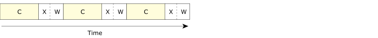
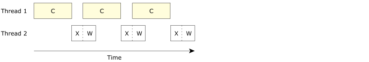
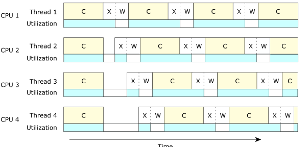
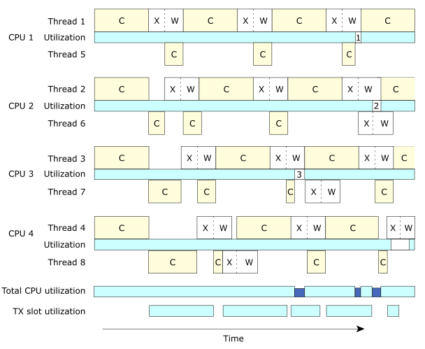

Suppose that we modify our example slightly so that we can illustrate why it's also sometimes a good idea to have multiple threads even on a single-CPU system.
int main (int argc, char **argv)
{
int x1;
… // perform initializations
for (x1 = 0; x1 < num_x_lines; x1++) {
do_one_line (x1); // "C" in our diagram, below
tx_one_line_wait_ack (x1); // "X" and "W" in diagram below
}
}
You'll notice that we've eliminated the display portion and instead added a tx_one_line_wait_ack() function. Let's further suppose that we're dealing with a reasonably slow network, but that the CPU doesn't really get involved in the transmission aspects—it fires the data off to some hardware that then worries about transmitting it. The tx_one_line_wait_ack() uses a bit of CPU to get the data to the hardware, but then uses no CPU while it's waiting for the acknowledgment from the far end.
Here's a diagram showing the CPU usage (we've used C
for the graphics compute part, X
for the transmit part, and W
for waiting for the acknowledgment from the far end):

Wait a minute! We're wasting precious seconds waiting for the hardware to do its thing!
If we made this multithreaded, we should be able to get much better use of our CPU, right?

This is much better, because now, even though the second thread spends a bit of its time waiting, we've reduced the total overall time required to compute.
If our times were Tcompute to compute, Ttx to transmit, and Twait to let the hardware do its thing, in the first case our total running time would be:
(Tcompute + Ttx + Twait) × num_x_lines
whereas with the two threads it would be
(Tcompute + Ttx) × num_x_lines + Twait
which is shorter by
Twait × (num_x_lines - 1)
assuming of course that Twait is less than or equal to Tcompute.
Tcompute + Ttx × num_x_lines
because we'll have to incur at least one full computation, and we'll have to transmit the data out the hardware—while we can use multithreading to overlay the computation cycles, we have only one hardware resource for the transmit.

Notice how each of the four CPUs is underutilized (as indicated by the empty rectangles in the
utilization
graph).
There are two interesting areas in the figure above.
When the four threads start, they each compute.
Unfortunately, when the threads are finished each computation, they're contending for the transmit
hardware (the X
parts in the figure are offset—only one transmission may be in
progress at a time).
This gives us a small anomaly in the startup part.
Once the threads are past this stage, they're naturally synchronized to the transmit hardware,
since the time to transmit is much smaller than ¼ of a compute cycle.
Ignoring the small anomaly at the beginning, this system is characterized by the formula:
(Tcompute + Ttx + Twait) × num_x_lines / num_cpus
This formula states that using four threads on four CPUs will be approximately 4 times faster than the single-threaded model we started out with.
soak upthe idle CPU time from the transmit acknowledge waits (and the transmit slot contention waits) that naturally occur. In that case, we'd have something like this:

This figure assumes a few things:
Notice from the diagram that even though we now have twice as many threads as CPUs, we still run
into places where the CPUs are underutilized.
In the diagram, there are three such places where the CPU is stalled
; these are
indicated by numbers in the individual CPU utilization bar graphs:
Wstate), while thread 5 had completed a calculation and was waiting for the transmitter.
This example also serves as an important lesson—you can't just keep adding CPUs in the
hopes that things will keep getting faster.
There are limiting factors.
In some cases, these limiting factors are simply governed by the design of the
multi-CPU motherboard—how much memory and device contention occurs when many CPUs
try to access the same area of memory.
In our case, notice that the TX Slot Utilization
bar graph was starting to become full.
If we added enough CPUs, they would eventually run into problems because their threads would be
stalled, waiting to transmit.
In any event, by using soaker
threads to soak up
spare CPU, we now
have much better CPU utilization.
This utilization approaches:
(Tcompute + Ttx) × num_x_lines / num_cpus
In the computation per se, we're limited only by the amount of CPU we have; we're not idling any processor waiting for acknowledgment. (Obviously, that's the ideal case. As you saw in the diagram there are a few times when we're idling one CPU periodically. Also, as noted above,
Tcompute + Ttx × num_x_lines
is our limit on how fast we can go.)